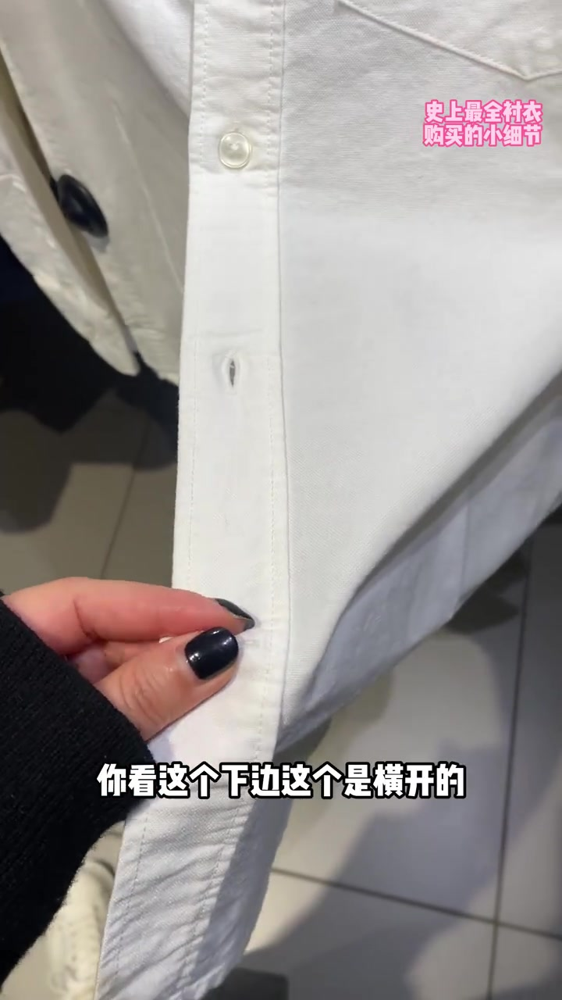
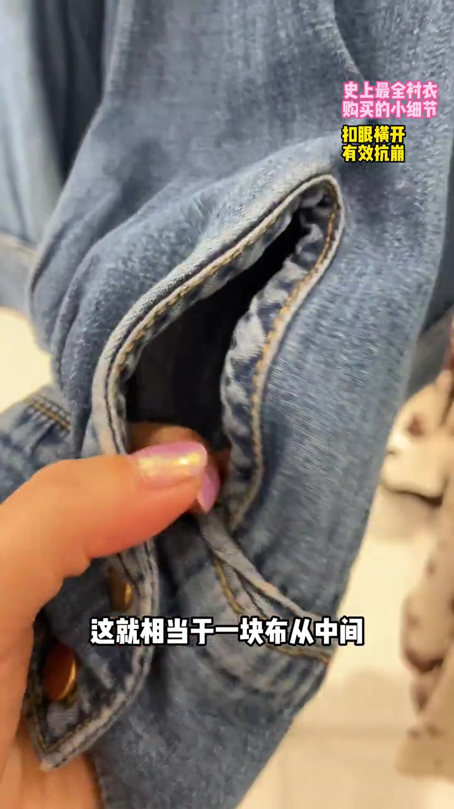
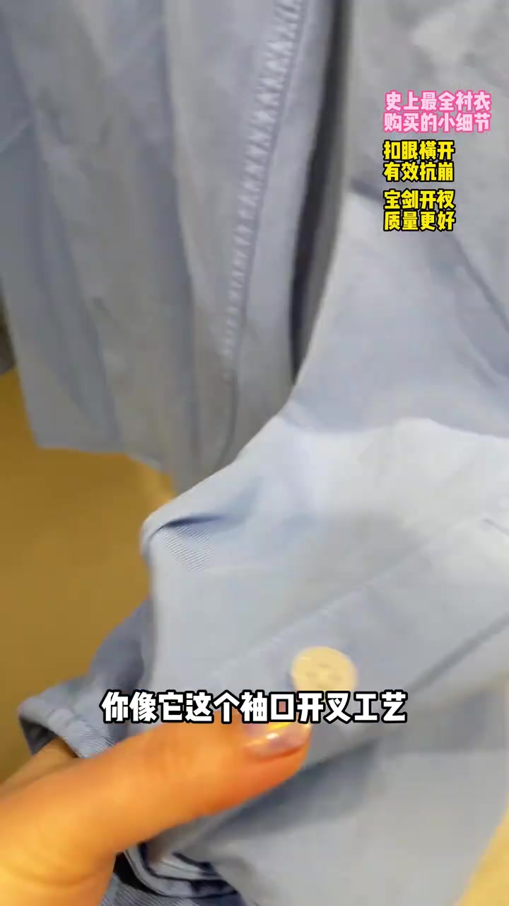
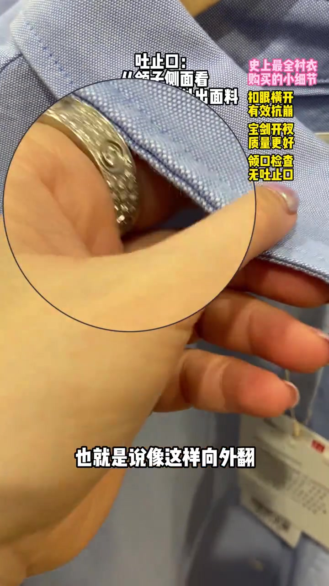
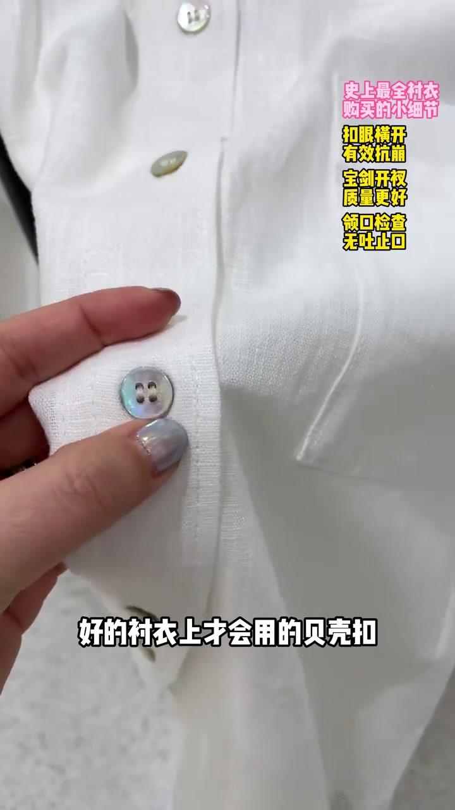
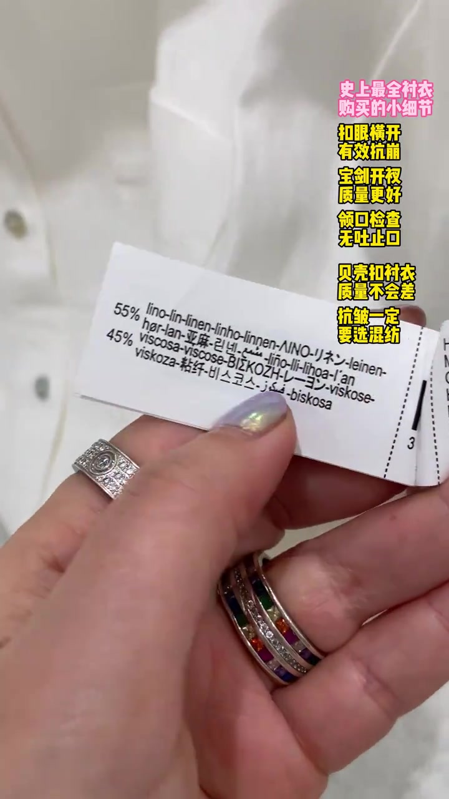
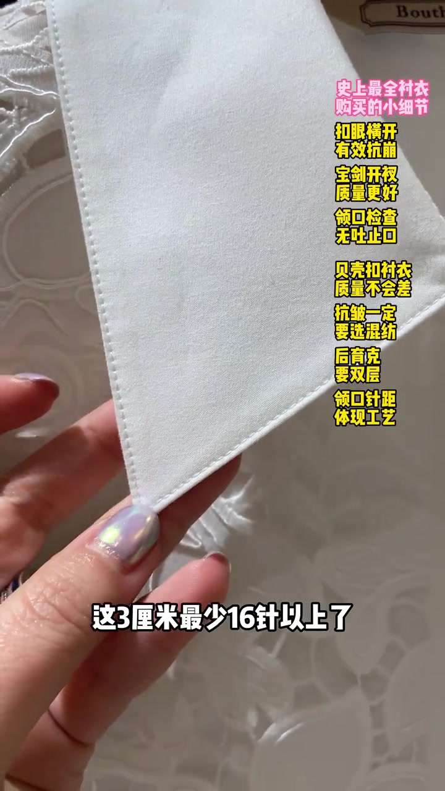
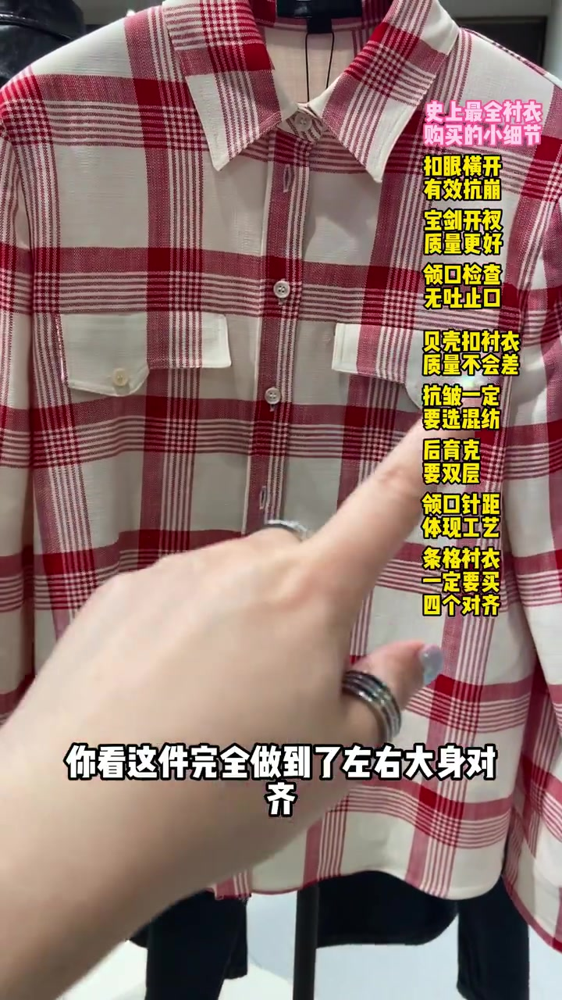

开场：为什么腰部那颗扣眼是横开的
主讲人把白衬衫门襟翻到镜头前，先问“为什么上面的扣眼都是竖开的”，再指到最下一颗——横开。叠字同步写出“扣眼横开 / 有效抗崩”。
解释很直接：这颗扣眼落在腰部最宽、受力最大的位置，横开能把拉力摊开，抗拉能力更强，活动时不易崩开。短视频一开场就把“看起来一样的扣眼”变成可摸的结构选择。
可见字幕校正：Whisper 将“抗拉能力”听成“抗拉努力”。下文按画面字幕叙述，文末转录区仍保留原始分段。

袖口开衩：简单剪开包条 vs 宝剑开衩
镜头切到蓝牛仔衬衣袖口，主讲人把“一块布从中间剪开再包条”的做法判为最次：工艺简单粗暴，后期穿着容易变形。叠字仍在提醒横开扣眼的同时，话题已经落到袖口开衩。
对照样是浅蓝衬衣的宝剑开衩——开衩头呈尖角，工艺接近门襟，更平整美观，长时间穿着也不易走形。主讲人把它明确说成“质量更好”的信号。
字幕校正：Whisper 把“袖口开叉/宝剑开衩/衬衣/门襟”听成“修口开叉/保剑头开叉/称衣/门筋”。画面叠字为“宝剑开衩 质量更好”。


领口重灾区：有没有“吐止口”
主讲人把领子侧面翻开给镜头看，叠字直接写“吐止口：从领子侧面看露出面料”。外翻、露出内层或止口，容易把领形拉成大小领；正常应向内扣、侧面干净。
这一段不再谈抗崩，而是把“领形稳不稳”钉在侧面是否吐料。画面用放大圈钉住领边，方便店内复检。
字幕校正：Whisper 将“吐止口”听成“土直口”。叠字清单同时写“领口检查 无吐止口”。

贝壳扣加分，混纺补抗皱
差点的衬衣常见塑料或树脂扣；好一点的会用天然贝壳扣，珠光明显，主讲人说它给基础衬衣“画龙点睛”。手指捏着白衬衫四孔贝壳扣，让材质差异一目了然。
随后翻出成分吊牌：示例为 55% 亚麻 + 45% 粘纤。论点是——想性能更好就选混纺；含量较少的那类纤维往往是为了补主成分短板。亚麻爱起褶，加少量化纤/粘纤可抗皱，又不至于毁掉表面质感与吸湿透气。
字幕校正：Whisper 将“贝壳扣/混纺/亚麻/爱起褶子/化纤/抗皱/主成分”听成“背可扣/浑坊/雅玛/爱奇者子/画纤/抗咒/煮成分”。吊牌可见“亚麻 / 粘纤”。


后育克要双层，领口针距看工艺，胸前还有隐形按扣
主讲人摸过后肩，把“后过肩 / 后育克”讲成可搓的双层结构：双层更挺阔、舒适、耐磨。镜头再贴到领尖，用三厘米针数说话——“这 3 厘米最少 16 针以上”，把针距当成工艺密度证据。
白蕾丝衬衣胸前还藏了隐形按扣，用来防止活动量突然加大时门襟崩开。主讲人评价“设计很用心”，把结构细节接到穿着场景。
字幕校正：Whisper 将“后育克/16针”听成“护过肩/护玉克/16帧”。叠字为“后育克要双层”“领口针距体现工艺”。

条格四对齐，以及领角宝剑插片
红白格衬衣被当作“优秀条格衣服四对齐”样板：左右大身、口袋与大身、袖子与大身、前后大身都对上。主讲人逐一点名，把对格从审美升级成做工清单。
收尾回到浅蓝衬衣，说明这类面料休闲可穿、正装打领带也可穿；领脚还做了“宝剑插片”（领角插片/领撑），细节收得干净。整支视频像一份店内翻检清单，而不是品牌广告。
字幕校正：Whisper 将“优秀条格……四对齐/休闲/正装/打条领带/宝剑插片”听成“优秀调格衣服4对齐/胸显/正光/大条领带/保健插片”。画面叠字为“条格衬衣一定要买四个对齐”“衬衣的领角有宝剑插片”。
